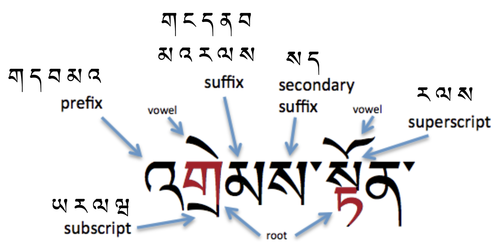
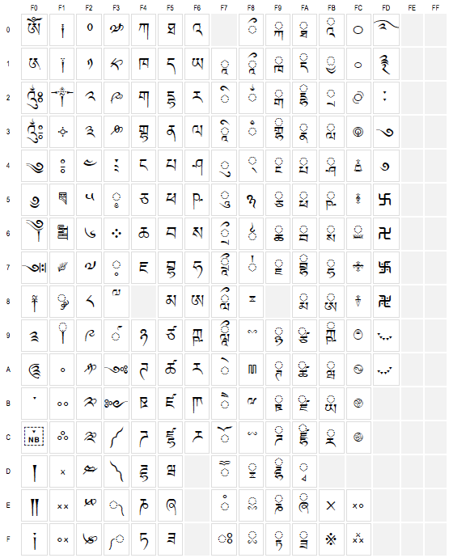

Tibetan script overview
The Tibetan script is an abugida, ie. consonants carry an inherent vowel sound a that is overridden using vowel signs. Text runs from left to right.
The script combines consonants, vowels, superscripts, and subscripts letters in combinations that conform to the basic rules of Tibetan spelling to form syllables. Words are made up of one or more syllables.
There are no case differences in Tibetan.
藏文是拼音字母文字，由辅音、元音、下标字、上标字等基本字母按照藏文拼写规律组合而成，形成藏文的字符和音节。
There are various different Tibetan scripts, of two basic types: དབུ་ཅན་ dbu-can, pronounced uchen (with a head), and དབུ་མེད་ dbu-med, pronounced ume (headless). This document concentrates on the former. Pronunciations are based on the central, Lhasa dialect.
Traditionally, Tibetan text was written on pechas (dpe-cha དཔེ་ཆ་), loose-leaf sheets. Some of the characters used and formatting approaches are different in books and pechas.
Tibetan structural elements include prefixes, root characters, subscripts, superscripts, suffixes, secondary suffixes, vowels and intersyllabic marks.
藏文的结构元素包括前缀（prefix），根（root），下标（subscript），上标（superscript），后缀(suffix)，后后缀（secondary suffix），元音(vowel)及音节符（intersyllabic mark）。
Tibetan Characters 藏文字符
Consonants ...
Native Tibetan words use 30 consonants, but the Unicode Tibetan block contains many more. Many of the extra consonants (and other characters) are used for transliteration of other languages, principally Sanskrit and Chinese. These include the retroflex and voiced aspirated consonants. A couple of characters are extensions for Balti.
The basic 30 Tibetan consonants are listed below:
藏文有三十个辅音字母，具体如下表所示：
| ཀ KA e |
ཁ KHA e |
ག GA e |
ང NGA m |
| ཅ CA p |
ཆ CHA p |
ཇ JA e |
ཉ NYA p |
| ཏ TA p |
ཐ THA p |
ད DA e |
ན NA p |
| པ PA p |
ཕ PHA p |
བ BA e |
མ MA p |
| ཙ TSA p |
ཚ TSHA p |
ཛ DZA e |
ཝ WA e |
| ཞ ZHA p |
ཟ ZA e |
འ -A e |
ཡ YA e |
| ར RA e |
ལ LA e |
ཤ SHA e |
ས SA e |
| ཧ HA e |
ཨ A p |
Vowels ...
Standard Tibetan has five vowels, for which there are four characters, since one vowel, a, is inherent in the consonant. Non-inherent vowels are indicated by a single mark attached to and typed after a consonant or consonant stack. These are shown with the character KA in the following figure.
དབྱངས་བཞི་ 即元音字母（vowel），标准的藏文有五个元音，其中一个是发声固定的音 /a/，此音在通常带在各辅音字母后面，所以不需要加，除非文字结构需要加，其他的四个元音为非固定发声音，元音字母跟辅音字母通过上下形式相叠加，产生特定的音同时与其他相对结构较近似字区分。例如：སྤྱིར་ /tji/(一般)
| ཀི KI |
ཀུ KU |
ཀེ KE |
ཀོ KO |
In the example ʧí, general, shown in the vowel sign that appears above the stack is typed after the three consonants that make up the stack.
A-chung and a-chen ...
The phonological realisation for U+0F60 TIBETAN LETTER -A འ (called འ་ཆུང་, 'a-chung) and U+0F68 TIBETAN LETTER A ཨ (called ཨ་ཆེན་, a-chen) is a. In the Lhasa dialect, the former has a high and the latter a low tone.
Both 'a-chung and a-chen can be used with vowel signs, in which case the a sound is replaced by that of the vowel.
'A-chung can also represent a nasal, so མཚམས་ mtshams (boundary) and མཐུན་ mthun (agreement) are often written འཚམས་ and འཐུན་.
'A-chung may also nasalise the juncture of two morphemes, as in དགེ་འདུན་ dge-'dun (buddhist community), pronounced ɡenyn.
Other than loanwords, Tibetan only allows diphthongs in diminutive expressions. 'A-chung is used to write these, as in the following: མི་ mi person → མེའུ་ me'u dwarf; རྡོ་ rdo stone → རྡེའུ་ rde'u pebble.
A subjoined 'a-chung is used to express long vowels in loan words (Tibetan doesn't have them natively), such as those borrowed from Chinese, Hindi and Mongolian. For example, ཏཱ་བླ་མ་ tā-bla-ma (grand lama) (ta from Chinese), and ཤྲཱི་ śrī (wealth) from Sanskrit. For this purpose you should use U+0F71 TIBETAN VOWEL SIGN AA ཱ, and not U+0FB0 TIBETAN SUBJOINED LETTER -A ྰ.
The Unicode Standard says of SUBJOINED LETTER -A:
U+0FB0 TIBETAN SUBJOINED LETTER -A ( a-chung ) should be used only in the very rare cases where a full-sized subjoined a-chung letter is required. The small vowel lengthening a-chung encoded as U+0F71 TIBETAN VOWEL SIGN AA is far more frequently used in Tibetan text, and it is therefore recommended that implementations treat this character (rather than U+0FB0) as the normal subjoined a-chung.
Finally, 'a-chung can be used to disambiguate the location of an inherent vowel in a syllable. The sequence དག་ dag dàg (I) is interpreted as CVC. To express CCV add 'a-chung, eg. དགའ་ dga' gà (virtue).
Consonant Stacking ...
A salient feature of the Tibetan script is the tendency to stack consonant characters belonging to a syllable. A stack has a standard consonant character at the top (although it may actually be slightly squeezed or adapted slightly in shape), and one or more special subjoined consonant characters beneath it.
The word 'head' is often used to refer to either the top-most consonant (ie. spacially) or the root consonant of a syllable, which may be a subjoined consonant. We therefore avoid this term here, and say 'root' or 'topmost'.
The topmost consonant in a stack always uses the standard character from the Unicode Tibetan block regardless of whether it is a root consonant or not, and consonants below it always use a character from the subjoined range.
The example shows a stack with three consonants. (There is also a vowel sign above the stack.)
Unlike Indic scripts, no virama (or halant) is used for Tibetan. Instead, just a full and subjoined form of each consonant. The subjoined forms are combining characters. Avoiding the virama makes sense because the virama is not used by Tibetans, and the approach taken makes it easier to create the large number of stacks contained in Tibetan text.
Subjoined forms of the basic 30 Tibetan consonants are listed below:
| ྐ KA e |
ྑ KHA e |
ྒ GA e |
ྔ NGA e |
| ྕ CA p |
ྖ CHA p |
ྗ JA e |
ྙ NYA p |
| ྟ TA p |
ྠ THA p |
ྡ DA e |
ྣ NA p |
| ྤ PA p |
ྥ PHA p |
ྦ BA e |
ྨ MA p |
| ྩ TSA p |
ྪ TSHA p |
ྫ DZA e |
ྭ WA e |
| ྮ ZHA p |
ྯ ZA e |
ྰ -A e |
ྱ YA e |
| ྲ RA e |
ླ LA e |
ྴ SHA e |
ྶ SA e |
| ྷ HA e |
ྸ A e |
The following list shows the order in which characters should be typed, and stored in memory, for a set of stacked characters.
Standard consonant shape
First subjoined consonant
Any other subjoined consonants, in order of descent
Subjoined vowel 'a-chung
Standard or compound vowel sign, or virama
Some consonant characters are modified using the character U+0F39 TIBETAN MARK TSA-PHRU ༹ In these cases, the tsa-phru character should be placed in memory immediately after the consonant it modifies.
Tibetan Syllables 藏文音节
Word boundaries within a section are not indicated, only 'syllables', known as tsheg-bar tsek bar. Syllable boundaries are usually separated by the tsek character, U+0F0B TIBETAN MARK INTER-SYLLABIC TSHEG ་.
The pronunciation of Tibetan words is typically much simpler than the orthography, which involves patterns of consonants. These patterns reduce ambiguity and can affect pronunciation and tone.
The following diagram shows characters in all of the syllabic positions, and lists the characters that can appear in each of the non-root locations. The two-syllable word in the example is འགྲེམས་སྟོན་ 'grems-ston ɖɹem-ton (exhibition).

Structural Rules 结构规则
The primary consonant in a syllable is called the root consonant (or radical) (མིང་བཞི་), and the other consonants in the syllable ( normally up to 6 in total) annotate or modify it. The following rules help identify the root:
要分析藏文结构必须先得找出根字母，然后其他的部分根据结构规则就能找到。根字母的判断方法如下：
-
A consonant with a vowel is always the root, unless it is the phrase connector འི, and letters with superscripts or subscripts are root consonants.
一个辅音上有元音字母，那就是根字母，除非是འི如下上面是元音字母下面是辅音字母，在此中是根字母。
-
In a 2-consonant syllable with no vowel, the first consonant is always the root.
一个辅音上有上标字或者下标字那么这个辅音字母也是根字母。
在一个具有两个辅音字母且没有元音字母的字中，第一个字母是根字母。
例如：
-
In a 3-consonant syllable where the last consonant is not ས, the second consonant is likely to be the root.
如果一个字是由三个辅音字母构成且最后一个字母若不是ས ，则中间的那个字母即第二个最可能是根字母。
For example: གསལ་ /tsla/ གནས་ /nla/
例如：གསལ་ /tsla/ གནས་ /nla/
但是当末尾出现ས时中间的字母不一定是根字母。例如： ལགས་/lag/ 从这个发现最末尾是ས所以根字母是第一个字母。
-
In a 4-consonant syllable, the second consonant is always the root.
在一个具有四个辅音字母的字中，第二个辅音字母是根字母。
Descriptions of Non-root Elements ...
Prefixes ...
A prefix (སྔོ་འཇུག་) appears to the left of the root consonant, and is one the following 5 letters: ག ད བ མ འ
སྔོ་འཇུག་ 即前缀（prefix），放在第一个位置，即放在根字母前面，通常有五个字母，分别是 ག ད བ མ འ
Characters in the prefix position are not pronounced, but de-aspirate aspirated root characters and give a higher tone value to nasal root characters. The consonant ག g may occur before 11 root characters, ད d before 6, བ b before 10, མ m before 11, and འ a before 10.
Examples: འཁོར་ལོ་ 'khor-lo kor-lo (wheel), བསད་ bsad sɛ́ (killed).
Suffixes ...
Suffixes (རྗེས་འཇུག་) appear to the right of the root letter, and are usually one of the following 10 letters: ག ང ད ན བ མ འ ར ལ ས
Characters in the suffix position have one of the following effects:
-
add their own sound ( ག ང བ མ འ ར ) , eg. དག་ dag dag (I).
-
modify the root's vowel value ( ད ས ), eg. བསད་ bsad sɛ́ (killed).
-
both of the above ( ན ལ ), eg. བདུན་ bdun dỳn (seven).
Secondary Suffix ...
Secondary suffixes (ཡང་འཇུག་) appear to the right of other suffixes.
ཡང་འཇུག་ 即后后缀（secondary suffix），放在后缀字母后的字母。通常只有两个 。即： ད ས
Only two characters can appear in the secondary suffix location, according to Tibetan grammar, ས and ད, and the latter is no longer officially found in modern Tibetan. A character in this position adds no sound and nor does it affect the sounds in the rest of the syllable.
Examples: བསྒྲུབས་ bsgrubs ɖɹúb (established), and གྱུརད་ gyurd kjùr (became).
Superscripts ...
A superscript (མགོ་ཅན་) appears above the syllable's root, and is one of the following characters: ར ལ ས
མགོ་ཅན་ 即上标字（superscript），放在根字母上面，通常有三个字母 。即： ར ལ ས
The three characters that appear in the superscript location raise the tone pitch of the syllable, but are not pronounced themselves. Each superscript character can only be used with a specified set of root characters.
| ར | རྐ | ka | རྒ | ga | རྔ | ŋa | རྗ | ʤa | རྙ | ɲa | རྟ | ta |
|---|---|---|---|---|---|---|---|---|---|---|---|---|
| རྡ | da | རྣ | na | རྦ | ba | རྨ | ma | རྩ | tsa | རྫ | dza | |
| ལ | ལྐ | ka | ལྒ | ga | ལྔ | ŋa | ལྕ | ca | ལྗ | ʤa | ལྟ | ta |
| ལྡ | da | ལྤ | pa | ལྦ | ba | ལྷ | lha | |||||
| ས | སྐ | ka | སྒ | ga | སྔ | ŋa | སྙ | ɲa | སྟ | ta | སྡ | da |
| སྡ | na | སྤ | pa | སྦ | ba | སྨ | ma | སྩ | tsa | |||
Note that RA has a shape slightly different from its nominal shape in all combinations except རྙ and རླ. You should still use the normal RA Unicode character for the superscript. The font will make the needed adjustments to the shape.
Subscripts ...
A subscript (འདོགས་ཅན་) can be one of the following four characters: ྲ ྱ ླ ྭ
འདོགས་ཅན་ 即下标字（subscript），放在根字母下面。即右边两个： ྲ ྱ ླ ྭ
The four characters that can appear in the subscript location are also each combined with a particular subset of root characters and have different effects.
| ྱ | ཀྱ | kja | ཁྱ | kʰja | གྱ | gja | པྱ | cja | ཕྱ | cʰja | བྱ | ʤja | མྱ | ɲa | ཧྱ | hja |
|---|---|---|---|---|---|---|---|---|---|---|---|---|---|---|---|---|
| ྲ | ཀྲ | tra | ཁྲ | tʰra | གྲ | dra | ཏྲ | tra | ཐྲ | tʰra | དྲ | dra | ནྲ | na | ||
| པྲ | tra | ཕྲ | tʰra | བྲ | tra | མྲ | ma | སྲ | sa | ཧྲ | hra | |||||
| ླ | ཀླ | la | གླ | la | བླ | la | རླ | la | སླ | la | ཟླ | da | ||||
| ྭ | ཀྭ | ka | ཁྭ | ka | གྭ | ga | ཉྭ | ɲa | དྭ | da | ཙྭ | tsa | ཚྭ | ʧa | ||
| ཞྭ | zʰa | ཟྭ | za | རྭ | ra | ལྭ | la | ཤྭ | ʃa | ཧྭ | ha | |||||
Note that three of the subscripts have shapes that are significantly different from the nominal shape of the character they represent.
Uniquely, WA can also appear as a sub-subscript as in གྲྭ་ grwa.
Unicode-encoded Tibetan Characters 藏文的字体与字符的Unicode编码
The figure below shows the arrangement of Tibetan characters in the Unicode Tibetan character block, as of Unicode version 8.0.
藏文目前的字形字体为喜马拉雅字体。根据《GB？？？》，藏文字符编码覆盖了Unicode的U+0F00至U+0F0E、U+0F10至U+0F1E、U+0F20至U+0F2E U+0F30+范围。具体如下：

Tibetan Characters used for Transliteration ...
Many of the characters in the Tibetan block are there for transcribing or transliterating non-Tibetan text. The Tibetan script provides for perfect mappings between Sanskrit and Tibetan, but Tibetan is also used to transliterate other languages, such as Chinese, Mongolian and English.
There are a number of consonants, including a range of aspirated consonants, and the following range of retroflex consonants.
| GHA | DDHA | DHA | BHA | DZHA | KSSA | TTA | TTHA | DDA | NNA | SSA | ||
|---|---|---|---|---|---|---|---|---|---|---|---|---|
| head |  |
 |
 |
 |
 |
 |
 |
 |
 |
 |
 |
|
| subjoined |  |
 |
 |
 |
 |
 |
 |
 |
 |
 |
 |
The retroflex consonants, which are reversed versions of Tibetan consonant shapes, are often used to distinguish loan words from sequences of Tibetan syllables. For example, ཁ་ཎ་ཌ་ kha-ṇa-ḍa (Canada), མོ་ཊ་ mo-ṭa (car).
In transliterated text consonants are sometimes stacked in ways that are not allowed in native Tibetan text.
There are also additional vowel signs between U+0F71 and U+0F7D for Sanskrit transcriptions, and several are compound shapes. The component parts of these compounds should normally be typed individually, rather than using the compound codepoints. The table below shows the characters, and indicates those whose use is discouraged and strongly discouraged.
| II | EE | OO | Rev I | V R | V L | II | UU | Rev II | V RR | V LL |
|---|---|---|---|---|---|---|---|---|---|---|
| Ok |  |
 |
 |
 |
 |
|||||
| Discouraged |  |
 |
 |
|||||||
| Deprecated & strongly discouraged |
 |
 |
U+0F7F TIBETAN SIGN RNAM BCAD ཿ ( nam chay ) is the visarga, and U+0F7E TIBETAN SIGN RJES SU NGA RO ཾ ( ngaro ) is the anusvara.
Compound Consonants
The six compound consonants GHA, DDHA, DHA, BHA, DZHA and KSSA in the table above, used to represent the Indic consonants during transliteration, can be created by combining a head consonant with a subjoined HA, but the Unicode Standard recommends that the precomposed characters be used in order to maximise effectiveness of transmission and searching. I have suggested that this recommendation be changed in version 7, since many applications silently normalise text to the decomposed sequence.
Fixed Form Letters
U+0F62 TIBETAN LETTER RA at the top of a stack usually has a reduced form, eg. རྐ rka. For transliterations it is sometimes desirable to retain the full form of RA where in Tibetan words it would be reduced. To do this use U+0F6A TIBETAN LETTER FIXED-FORM RA ཪ instead of the normal RA, but only where the normal RA would not produce the full form anyway, ie. do not use eg. རྙ rnya, which has the full form already.
There are also fixed form variants of subjoined RA, YA and WA.
Tibetan Numerals 藏文的数字
Tibetan has its own set of digits, although publications may also use European numerals. The basic Tibetan numbers are used in the same way as European numerals. They differ only in shape.
藏文有自己的数字表示。藏文数字跟阿拉伯数字本质上没有不同，只是符号表示形式不同而已，但是在藏文中增加了半数字的表示形式。
The Unicode Tibetan block also contains a set of half-numbers. These are very rarely used, and there is some ambiguity about how they are used. By some interpretations, the following shapes each have the value of 0.5 less than the number within which it appears. Used only in some traditional contexts, they appear as the last digit of a multidigit number, eg. ༤༬ represents 42.5.
藏文的半数字是指1到9数字一半的表达方式。例如：1的一半是0.5，2的一半是1，3的一半是1.5等等。在藏文中，可以通过半数字直接表达而不用书写小数树。例如，43.5在藏文中可以直接书写为 ༤༬。
下表是藏文数字（及半数字）与阿拉伯数字表示方法的对应：
| ༡ 1 |
༢ 2 |
༣ 3 |
༤ 4 |
༥ 5 |
༦ 6 |
༧ 7 |
༨ 8 |
༩ 9 |
༠ 0 |
| ༪ 0.5 |
༫ 1.5 |
༬ 2.5 |
༭ 3.5 |
༮ 4.5 |
༯ 5.5 |
༰ 6.5 |
༱ 7.5 |
༲ 8.5 |
༳ 9.5 |
Head Marks 藏文的数字
In traditional, loose-leaf Tibetan pechas a head mark or yig-mgo (yig go) is used at the beginning of the front of the folio so that you can tell which is the front.
Head marks are also used in both pechas and books to indicate the start of a headline or the start of the first paragraph in a longer text.
Head marks differ from text to text. The Unicode Standard provides a number of characters to give some basic coverage, but may not meet all needs.
A common head mark is U+0F04 TIBETAN MARK INITIAL YIG MGO MDUN MA ༄, and there is also the extension character U+0F05 TIBETAN MARK CLOSING YIG MGO SGAB MA ༅. A head mark can be written alone, or can be followed by as many as three closing marks; head marks are also followed by two shads, eg.༄༅། །.
Three less common head marks, used in Nyingmapa and Bonpo literature, are also represented in the Tibetan block, namely:
- U+0F01 TIBETAN MARK GTER YIG MGO TRUNCATED A ༁
- U+0F02 TIBETAN MARK GTER YIG MGO -UM RNAM BCAD MA ༂
- U+0F03 TIBETAN MARK GTER YIG MGO -UM GTER TSHEG MA ༃
Tibetan Punctuation 藏文的标点符号
Syllable Breaks 音节符
The U+0F0B TIBETAN MARK INTER-SYLLABIC TSHEG [་] is used to indicate syllable boundaries. Note that this is not necessarily equivalent to word boundaries.
音节符U+0F0B TIBETAN MARK INTER-SYLLABIC TSHEG [་] ，加在每个音节之后，起划分音节的作用，让读者正确读出文字。如果缺少音节符文字混论无法读出正确的字，也不构成字。
For more information about the use of the tsek see .
藏文音节符必须出现在每个音节之后，才能构成一个完整的音节。在排版时，每行都是由完整的音节组成，行末音节不能拆分。藏文的行首不能出现音节符。当最末尾的一个音节不能完整排下时，要把该音节移到下一行，同时该行末用音节符补齐，如果需要补齐的音节点较多而影响排版美观时，则把该行段句符距离拉大进行调节。
Section Breaks ...
Key divisions of the text are sections (or expressions (brjod-pa)) and topics (don-tshan), which do not necessarily equate to English phrases, sentences and paragraphs. Sections normally end with a shay, U+0F0D TIBETAN MARK SHAD །, followed by a space. Topics (eg. headlines, verses, and longer paragraphs) are often terminated or separated with shay+space+shay.
དུང་དང་འོ་མར་འགྲན་པའི་ལྷག་བསམ་མཐུ། །དམན་ཡང་དཀར་པོའི་བྱས་འབྲས་ཅུང་ཟད་ཅིག །བློ་དང་འདུན་པ་བཟང་བའི་རང་རིགས་ཀུན། །རྒྱལ་ཁའི་འཕྲིན་བཟང་ལས་དོན་འགྲུབ་ཕྱིར་འབད།།
For more information about the use of this punctuation and various similar punctuation marks, see .
Other Punctuation & Signs ...
Over and above that just described, traditional Tibetan text uses very little punctuation, but there a number of signs and symbols to choose from.
-
U+0F08 TIBETAN MARK SBRUL SHAD ༈ is used to separate texts that are equivalent to topics and subtopics, such as the start of a smaller text, the start of a prayer, a chapter boundary, or to mark the beginning and end of insertions into text in pechas.
-
This drul-shay is usually surrounded on both sides by the equivalent of about three non-breaking spaces (though no rule is specified). The drul-shay should not appear at the beginning of a new line and the whole structure of spacing-plus- shay needs to be kept together.
-
U+0F3C TIBETAN MARK ANG KHANG GYON ༼ and U+0F3D TIBETAN MARK ANG KHANG GYAS ༽ are paired punctuation used to form a roof over one or more digits or words. The right-hand character can also be used much like a single parenthesis in list counters.
-
U+0F3E TIBETAN SIGN YAR TSHES ༾ and U+0F3F TIBETAN SIGN MAR TSHES ༿ are also paired characters used in combination with digits.
-
U+0F34 TIBETAN MARK BSDUS RTAGS ༴ means 'etc.', and is used after the first few tsek-bar of a recurring phrase.
-
U+0FBE TIBETAN KU RU KHA ྾ (often repeated three times) indicates a refrain.
-
U+0F36 TIBETAN MARK CARET -DZUD RTAGS BZHI MIG CAN ༶ and U+0FBF TIBETAN KU RU KHA BZHI MIG CAN ྿ are used to indicate where text should be inserted within other text or as references to footnotes and marginal notes.
-
U+2638 WHEEL OF DHARMA ☸ which occurs sometimes in Tibetan texts is encoded in the Miscellaneous Symbols block.
How are quotations demarcated in Tibetan?